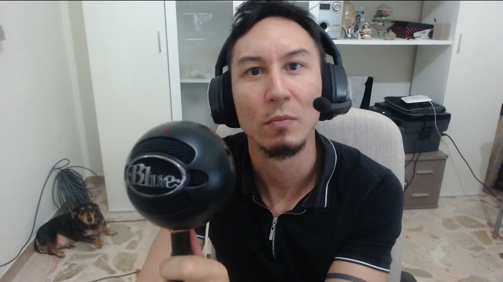

August 27, 2024
Premieres October 7th!
The time is coming closer and closer! After a month of shooting episodes, we are in post production now and are signing partnerships! Things couldn't be more exciting! Stay Tuned to learn more!
To join the waitlist, apply here!
That's my dog. Cat is hiding.
After a decade in cybersecurity as a security researcher, I have discovered that many experts in our industry have amazing ideas about how to build and improve things. However, because they are unsure or do not know how to take their ideas and build a company from them, they either let those ideas die or attempt to integrate them into their existing companies. As we know, the bigger the company, the less likely it is that they will listen to new ideas.
In our upcoming podcast, we explore the world of cybersecurity professionals who have reached the pinnacle of their profession and have decided to launch their lives into the stratosphere of entrepreneurship. We delve into the struggles and challenges these founders have faced and continue to face.
But that's not all. We'll also be bringing in investors who specialize in cybersecurity companies. These investors will share their perspectives on what makes a cybersecurity startup worth investing in, the trends they are watching, and the advice they have for aspiring founders in the space. Their insights will provide a valuable complement to the stories of our featured entrepreneurs, offering a 360-degree view of the cybersecurity startup ecosystem.
We also uncover the strategies these founders employed to overcome obstacles and the lessons they've learned along the way. From securing funding to building a team, from dealing with setbacks to celebrating victories, these stories are not only about success but also about resilience, innovation, and the relentless pursuit of excellence.
Whether you're a cybersecurity professional with entrepreneurial aspirations, an investor looking for the next big thing, or simply someone who enjoys hearing about the journeys of industry leaders, this podcast offers valuable insights and inspiration. Join us as we bring you the untold stories of those who dared to turn their ideas into reality and, in doing so, are shaping the future of cybersecurity.
Stay tuned for our upcoming episodes, where each conversation will provide a unique perspective on what it takes to succeed in the ever-evolving world of cybersecurity entrepreneurship.
To join the waitlist, apply here!